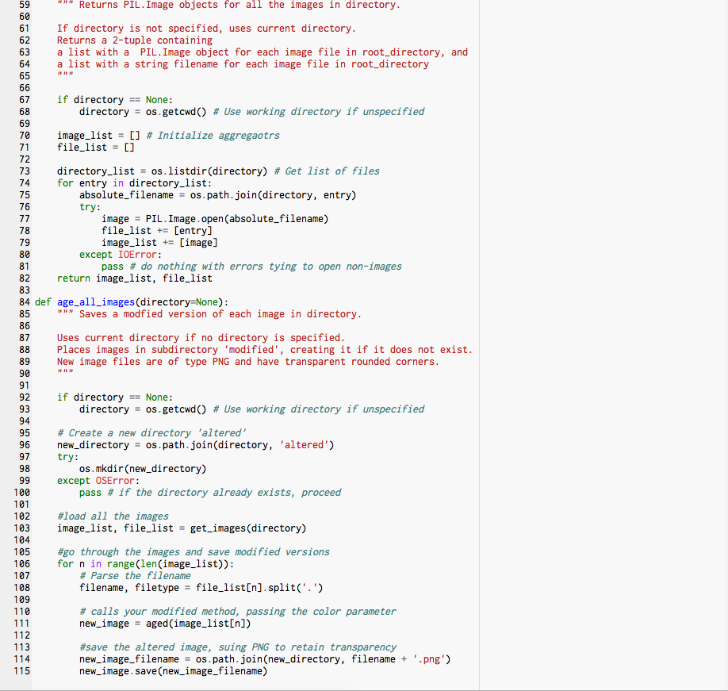
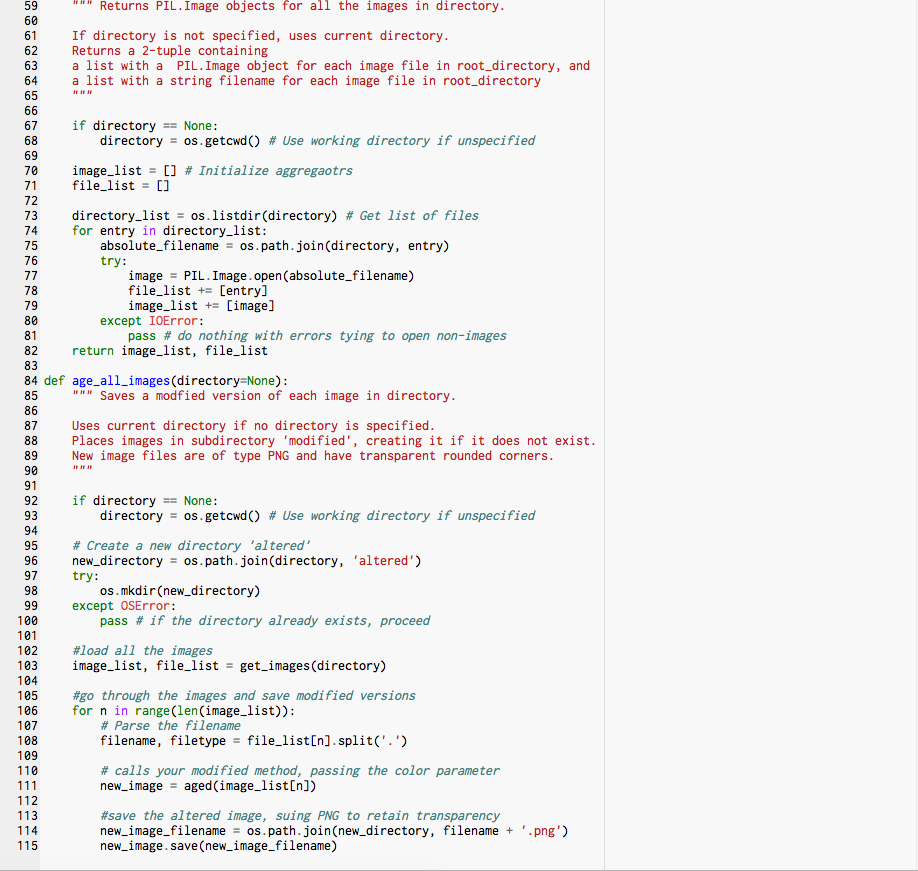

Image Artist
For Image Artist, we created Instagram-style filters for images. My filter aged images, turning them into grayscale and then adding yellow tint.
Wolfgang Amadeus Mozart: Turkish March from Piano Sonata No. 11
Before:
After:

Code:
 
